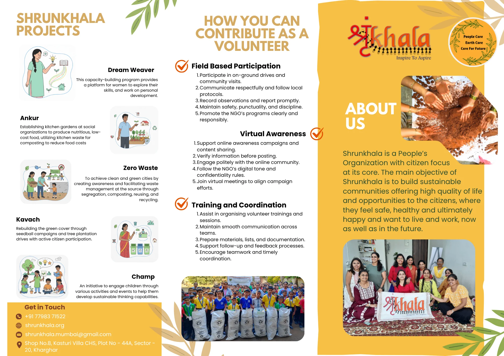
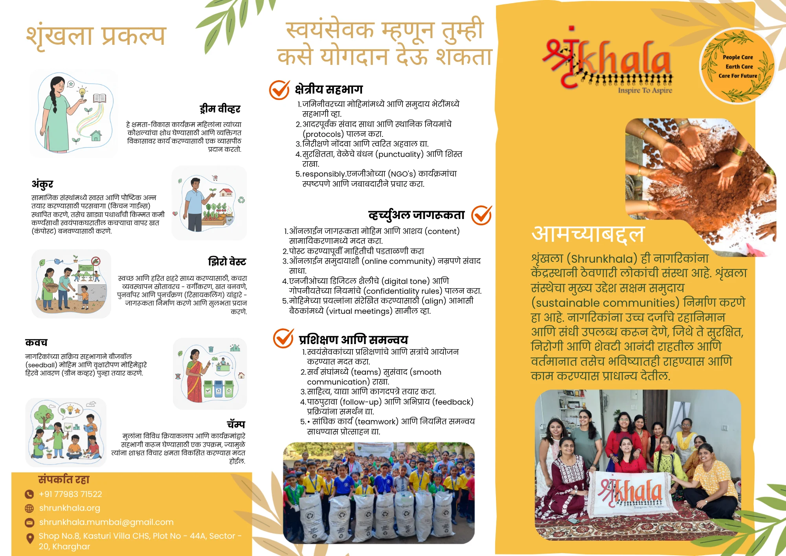

Introduction to Shrunkhala
Text on this image, in the order it is stored in the file:
The term ‘Shrunkhala’, derived from Sanskrit, translates to ‘Chain’ in English. It reflects the philosophy and approach of the organization — emphasizing collective effort and interconnected responsibility. Guided by the belief that sustainable communities are achievable only through the active engagement of citizens. Introduction to Shrunkhala Location Map
Organizational Overview
Text on this image, in the order it is stored in the file:
Organizational Overview Registered Name: Shrunkhala Organisation for Sustainable Development Legal Status: Non-Profit Entity, registered under Section 8 of the Companies Act. Established: 2018 Headquarters: Navi Mumbai, Maharashtra Founder Head Office: Kharghar, Navi Mumbai Operates as a citizen-focused organization, fostering participatory models for sustainable living.
Core Philosophy · Strategic Approach · Founder’s vision
Text on this image, in the order it is stored in the file:
Shrunkhala functions as a People’s Organization with citizens at the center of all initiatives. Believes in collective responsibility as the foundation for sustainable development. Seeks to transform awareness into tangible citizen action for long-term environmental and social impact. Core Philosophy Strategic Approach Engaging citizens through education, dialogue, and collaboration. Promoting awareness campaigns for sustainable living and responsible consumption. Facilitating community-driven initiatives to address local environmental challenges. Strengthening partnerships that enhance social, environmental and economic resilience. Founder’s vision “I believe real change begins with one person’s thinking. When an individual understands their responsibility, the whole community starts to transform.” “For me, Shrunkhala is about creating a space where people especially women can learn, talk, and grow together. That’s how sustainable communities are built.” “Sustainability does not start with big projects. It starts with simple habits.”
Why Shrunkhala?
Text on this image, in the order it is stored in the file:
VISION An inclusive, sustainable and equitable society in which people feel safe & happy and want to live now and in future APPROACH Shrunkhala is People’s organisation. Our approach is citizen centric. OBJECTIVE To build an open platform for the people, especially women, where they can explore their skills and design their dreams. Why Shrunkhala ?
Shrunkhala’s Objectives
Text on this image, in the order it is stored in the file:
Shrunkhala's Objectives Educate Changemakers Empower Women Build Green Community Support Sustainable Livelihoods Foster Happiness & Safety Move Towards Renewable Energy
Impact and Achievements
10,000+
Lives Touched:
Through awareness drives, sustainability workshops, and community initiatives.
25
MT CO₂ Emission Reduced:
Achieved through environmental projects and waste management initiatives.
100+
Skill Upgradation Programs:
Conducted to promote eco-literacy, sustainable practices, and livelihood enhancement.
200,000+
Seedballs Created:
Distributed to support reforestation and community-led environmental restoration.
Latest Projects
Text on this image, in the order it is stored in the file:
Dreamweaver – Capacity Building Program for Women Empowers women by providing an open platform to explore and enhance their skills. Ankur – Program for Food Sustainability Focuses on developing kitchen gardens within social institutions. Zero Waste – Reduce, Reuse, Recycle Promotes responsible consumption through refuse, reuse, and recycle practices. Kavach – Environmental Conservation Program Addresses the impact of urbanization and loss of green cover. Champ – Developing Socially & Environmentally Responsible Kids Aims to nurture social and environmental awareness among children. Latest Projects
Campaigns
Text on this image, in the order it is stored in the file:
Campaigns
Text on this image, in the order it is stored in the file:
Campaigns
Case Studies
Text on this image, in the order it is stored in the file:
EK SAATH The Earth Foundation is a Mumbai NGO that uses community action and behavior change to implement waste management and sustainability projects for cleaner local environments. GOONJ Goonj is a New Delhi-based NGO that uses its 'Cloth for Work' model to link urban waste management (sustainability) with community-led development (behavior change) and women's livelihood across India. Case Studies SWAYAM SHIKSHAN PRAYOG Swayam Shikshan Prayog (SSP) is a Pune-based NGO that empowers women leaders in health, water, sanitation, and climate-resilient farming to ensure sustainable rural development.
System Mapping
Text on this image, in the order it is stored in the file:
LEGENDS: COMMUNITY CENTERS HUMAN SPACES NON-HUMAN SHRUNKHALA FOUNDER HOMEMAKERS CHILDREN ELDERLY TEACHERS COMMUNITY LEADERS GRAM PANCHAYAT NGO PARTNERS GOVERNMENT REPRESENTATI IVES REWARDS BEHAVIORAL CHANGE COMPOSTING BINS SEGREGATION INSTRUMENT COMMUNICA TION PLATFORMS EVENT MATERIALS LOGISTICS WASTE COLLECTION BAGS MEASUREMEN T TOOLS EDUCATIONAL INSTITUTION S ORPHANAGES REHABILITATI ON CENTERS HOSPICES HOMES WASTE COLLECTION CENTERS KITCHEN GARDENS PUBLIC SPACES OFFICES REGIONS FOCUSED NAVI MUMBAI KHARGHAR RAIGAD KALYAN DOMBIVLI AMBARNATH SANGLI System Mapping AWARENESS MATERIALS DREAMWEAV ER PLASTIC RECYCLING PREMIER LEAGUE PROGRAM ZERO WASTE THERMOCAL RECYCLING ANKUR KAVACH CHAMP
Stakeholder Mapping
Text on this image, in the order it is stored in the file:
LOCAL GOVERNMENT BODIES INVOLVED CORE FOUNDER BENEFICIARIES FIELD STAFF HOMEMAKERS EDUCATIONAL INSTITUTION INFORMED SUPPLIERS BENEFICIARIES Vidya Samvardhan - Students for underprivileged communites Unnati - Youth and women from LIG communites -Marginalized families -Homeless individuals -Disaster affected groups -Local communites -Urban Residents Seva Jaago VENDORS VOLUNTEERS Stakeholder Mapping
Stakeholder Matrix
Text on this image, in the order it is stored in the file:
Local Government Bodies Informed Suppliers Educational Institutions Founder Community Leaders NGO Partners Government Representatives Urban Residents Vendors General Public Homemakers Children Elderly Teachers Volunteers Beneficiaries INTEREST POWER LOW HIGH LOW HIGH Stakeholder Matrix
Model
- Initial public reluctance: “Not my job; municipality’s duty.”
- Rewards for sustainable actions
- Women’s workshops
- Zero-waste drives
- Kitchen gardens
- Reward competitions.
- Rising rates of recycling
- Habit routine triggered by discomfort
- Repeated use of incentives
- Gradual rise in engagement and participation.
- Volunteer-based, flexible organization.
- Community-led design
- Collective decisions
- Constant redesign as per community feedback.
- Waste tracking and digital updates
- Sustainability is everyone's daily job
- Knowledge drives sustainable choices
- Norms: "Not my job" as barrier
- Trust built by respecting local culture
- Rewards and feedback sustain change
- System thinking guides program design
Select a layer to focus on it. Select it again to show all.
Causal Loop Diagram
Text on this image, in the order it is stored in the file:
Communication points External Pressure Community Trust External Incentives Personal Responsibility Realisation Self and Cross Monitoring Civic Sense Initial Resistance Denial Behavioural Change Motivation Volunteers Awareness Government Partnerships Organisational Capacity Program impact Program Deployment Rate Adoption Rate Codesigning/ Coworking Training Engagement + + + + + + + + + + + + + + + - B R R R 1 2 3 + - + + + + + + + + Causal Loop Diagram Shrunkhala’s Intervention +
Primary Research · Interviews
Text on this image, in the order it is stored in the file:
Gender Age Occupation Address Female 43 Primary School Teacher Dharavi, Mumbai — Community Learning Centre Female 34 Homemaker Khargar, Navi Mumbai, Kalyan– Shrunkhala Sustainable Systems Gender Age Occupation Address Volunteer Gender Age Occupation Address Male 42 Small scale farmer Uran Taluka, Raigad District Volunteer Beneficiary PRIMARY RESEARCH- INTERVIEWS
VOLUNTEER VERBATIM
Volunteer Motivation
“Shuru mein timepass lagta tha, but when I saw how a small act like waste segregation changes lives, it became my personal responsibility as a citizen.”
“I was in touch with the founder as we shared same office earlier so I was one of the first people to join Shrunkhala.”
Community Impact
“Seedball campaigns mein citizen participation amazing hota hai. Log seedhi aur collective impact wali cheezon se instantly jud jaate hain.”
“Simple steps like composting and waste sorting help our land stay healthier.Learning sustainable habits makes a big difference.”
“When we started with blue bag campaign in our society the mujhe notice huwa ki plastic weight gradually increase huwa per flat even my son started monitoring waste jo usme ja skta hai. ”
“It’s not just about the people we are working for even aap jaise students ko bhi fayda milta hai when you work with us aap bohot sari skills develop kr lete ho. ”
Structural Challenges
“Tree plantation drives mein har baar permits aur coordination tough hota hai. Nagar Palika ke saath engagement ke liye clear protocol hona chahiye.”
“The last moment change of plan is quite common jaise jab kisi college me collection zyada ho gaya then we have to arrange different type of vehicle also if a newer volunteer is on field. Honestly there are a lot of moving parts.”
1
Behavioural change
"Not my duty"
2
Structural gap
Decision making load on the Founder
3
Cultural gap
A lack of a standardized cultural assessment before starting a program in a new area.
System Mapping
Text on this image, in the order it is stored in the file:
LEGENDS: COMMUNITY CENTERS GAP HUMAN NON-HUMAN SOLUTION SPACE SHRUNKHALA FOUNDER HOMEMAKERS CHILDREN ELDERLY TEACHERS COMMUNITY LEADERS GRAM PANCHAYAT NGO PARTNERS GOVERNMENT REPRESENTATI IVES REWARDS BEHAVIORAL CHANGE COMPOSTING BINS SEGREGATION INSTRUMENT COMMUNICA TION PLATFORMS EVENT MATERIALS LOGISTICS WASTE COLLECTION BAGS MEASUREMEN T TOOLS EDUCATIONAL INSTITUTION S ORPHANAGES REHABILITATI ON CENTERS HOSPICES HOMES WASTE COLLECTION CENTERS KITCHEN GARDENS PUBLIC SPACES OFFICES REGIONS FOCUSED NAVI MUMBAI KHARGHAR RAIGAD KALYAN DOMBIVLI AMBARNATH SANGLI System Mapping AWARENESS MATERIALS DREAMWEAV ER ZERO WASTE THERMOCAL RECYCLING ANKUR KAVACH CHAMP GUIDELINES STRUCTURAL GAP BEHAVIOURAL CHANGE FLASH CARDS AR LENS AWARENESS LEAFLET MEASURING CHANGE HABITUAL CHANGE INFORMATION TRAINING PLASTIC RECYCLING PREMIER LEAGUE PROGRAM
Causal Loop Diagram
Text on this image, in the order it is stored in the file:
Behavioural repetition Volunteers Advocacy Reach Institute Partnerships Sense of achievement Incentives Workshops/ Awareness drives + + + + + + B R1 + + Causal Loop Diagram Shrunkhala’s Intervention Program success rate Organisation Capacity Shrunkhala’s Internal Communication Shrunkhala- Community Communication Community Trust Civic Sense Participation + + R2 + + + + + + + Measurable Behavioral Change Resources Knowledge Transfer Sustainable Habits Awareness Initial Resistance - - - Negligence - + + + + + +
Behavioural Change Model
Text on this image, in the order it is stored in the file:
BEHAVIOURAL CHANGE MODEL *Reference: Mahamuni, Ravi. 2020. Crafting a Change: Service Design Perspective for Sustained Behaviour Change.
CHANGE MODEL
Segregating Waste Correctly
Introducing New Behaviour: Segregate recyclables, compostables, & general waste daily.
CHOOSE YOUR COLOUR WISELY
AWARENESS IS THE FIRST STEP TOWARDS BEHAVIOUR CHANGE.
PLASTIC
ORGANIC
PAPER
HAZARDOUS
Plastic (e.g., plastic bottles, plastic bags)
Organic (e.g., fruit, leaves, food scraps)
Paper (e.g., newspapers, cardboard, packaging)
Hazardous (e.g., syringes, batteries, specific chemical containers)
Text on this image, in the order it is stored in the file:
CHOOSE YOUR COLOUR WISELY MEASURING THE BEHAVIOURAL CHANGE. AWARENESS
LEAFLET
- FOUNDER
- PROJECT COORDINATORS
- VOLUNTEERS
STRUCTURAL
ORGANIZATION

LEAFLET

Text on this image, in the order it is stored in the file:
Thank you